Binomial Theorem
A binomial is a polynomial with two terms
| 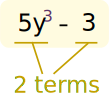 |
| example of a binomial
|
What happens when we multiply a binomial by itself ... many times?
Example: a+b
a+b is a binomial (the two terms are a and b)
Let us multiply a+b by itself using Polynomial Multiplication :
(a+b)(a+b) = a2 + 2ab + b2
Now take that result and multiply by a+b again:
(a2 + 2ab + b2)(a+b) = a3 + 3a2b + 3ab2 + b3
And again:
(a3 + 3a2b + 3ab2 + b3)(a+b) = a4 + 4a3b + 6a2b2 + 4ab3 + b4
The calculations get longer and longer as we go, but there is some kind of pattern developing.
That pattern is summed up by the Binomial Theorem:
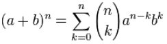
The Binomial Theorem
Don't worry ... it will all be explained!
And you will learn lots of cool math symbols along the way.
Exponents

First, a quick summary of Exponents.
An exponent says how many times to use something in a multiplication.
Example: 82 = 8 × 8 = 64
An exponent of 1 means just to have it appear once, so we get the original value:
Example: 81 = 8
An exponent of 0 means not to use it at all, and we have only 1:
Example: 80 = 1
Exponents of (a+b)
Now on to the binomial.
We will use the simple binomial a+b, but it could be any binomial.
Let us start with an exponent of 0 and build upwards.
Exponent of 0
When an exponent is 0, we get 1:
(a+b)0 = 1
Exponent of 1
When the exponent is 1, we get the original value, unchanged:
(a+b)1 = a+b
Exponent of 2
An exponent of 2 means to multiply by itself (see how to multiply polynomials):
(a+b)2 = (a+b)(a+b) = a2 + 2ab + b2
Exponent of 3
For an exponent of 3 just multiply again:
(a+b)3 = (a2 + 2ab + b2)(a+b) = a3 + 3a2b + 3ab2 + b3
We have enough now to start talking about the pattern.
The Pattern
In the last result we got:
a3 + 3a2b + 3ab2 + b3
Now, notice the exponents of a. They start at 3 and go down: 3, 2, 1, 0:
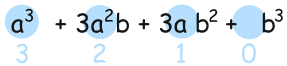
Likewise the exponents of b go upwards: 0, 1, 2, 3:
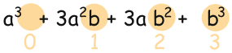
If we number the terms 0 to n, we get this:
| k=0 | k=1 | k=2 | k=3 |
| a3 | a2 | a | 1 |
| 1 | b | b2 | b3 |
Which can be brought together into this:
an-kbk
How about an example to see how it works:
Example: When the exponent, n, is 3.
The terms are:
| k=0: | k=1: | k=2: | k=3: |
|---|---|---|---|
| an-kbk = a3-0b0 = a3 |
an-kbk = a3-1b1 = a2b |
an-kbk = a3-2b2 = ab2 |
an-kbk = a3-3b3 = b3 |
It works like magic!
Coefficients
We are missing the numbers (which are called coefficients).
Let's look at all the results we got before, from (a+b)0 up to (a+b)3:
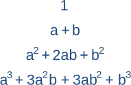
And now look at just the coefficients (with a "1" where a coefficient wasn't shown):
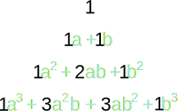
|
They actually make Pascal's Triangle! Each number is just the two numbers above it added together (except for the edges, which are all "1")(Here I have highlighted that 1+3 = 4) |
 |
Armed with this information let us try something new ... an exponent of 4:
| a exponents go 4,3,2,1,0: | a4 | + | a3 | + | a2 | + | a | + | 1 | ||
| b exponents go 0,1,2,3,4: | a4 | + | a3b | + | a2b2 | + | ab3 | + | b4 | ||
| coefficients go 1,4,6,4,1: | a4 | + | 4a3b | + | 6a2b2 | + | 4ab3 | + | b4 |
And that is the correct answer (compare to the top of the page).
We have success!
We can now use that pattern for exponents of 5, 6, 7, ... 50, ... 112, ... you name it!
That pattern is the essence of the Binomial Theorem.
Now you can take a break.
When you come back see if you can work out (a+b)5 yourself.
Answer (hover over): a5 + 5a4b + 10a3b2 + 10a2b3 + 5ab4 + b5
As a Formula
Our next task is to write it all as a formula.
We already have the exponents figured out:
an-kbk
But how do we write a formula for "find the coefficient from Pascal's Triangle" ... ?
Well, there is such a formula:

It is commonly called "n choose k" because it is how many ways to choose k elements from a set of n.
The "!" means "factorial", for example 4! = 4×3×2×1 = 24
You can read more at Combinations and Permutations.
|
And it matches to Pascal's Triangle like this: (Note how the top row is row zero
|
 |
Example: Row 4, term 2 in Pascal's Triangle is "6".
Let's see if the formula works:
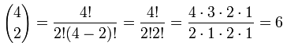
Yes, it works! Try another value for yourself.
Putting It All Together
The last step is to put all the terms together into one formula.
But we are adding lots of terms together ... can that be done using one formula?
Yes! The handy Sigma Notation allows us to sum up as many terms as we want:

Sigma Notation
Now it can all go into one formula:
The Binomial Theorem
Use It
OK ... it won't make much sense without an example.
So let's try using it for n = 3 :
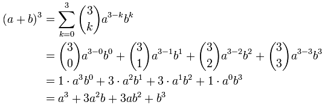
BUT ... it is usually much easier just to remember the patterns:
- The first term's exponents start at n and go down
- The second term's exponents start at 0 and go up
- Coefficients are from Pascal's Triangle, or by calculation using n!k!(n-k)!
Like this:
Example: What is (y+5)4
| Start with exponents: | y450 | y351 | y252 | y153 | y054 |
| Include Coefficients: | 1y450 | 4y351 | 6y252 | 4y153 | 1y054 |
Then write down the answer (including all calculations, such as 4×5, 6×52, etc):
(y+5)4 = y4 + 20y3 + 150y2 + 500y + 625
We may also want to calculate just one term:
Example: What is the coefficient for x3 in (2x+4)8
The exponents for x3 are 8-5 (=3) for the "2x" and 5 for the "4":
(2x)345
(Why? Because:
| 2x: | 8 | 7 | 6 | 5 | 4 | 3 | 2 | 1 | 0 |
| 4: | 0 | 1 | 2 | 3 | 4 | 5 | 6 | 7 | 8 |
| (2x)840 | (2x)741 | (2x)642 | (2x)543 | (2x)444 | (2x)345 | (2x)246 | (2x)147 | (2x)048 |
But we don't need to calculate all the other values if we only want one term.)
And let's not forget "8 choose 5" ... we can use Pascal's Triangle, or calculate directly:
n!k!(n-k)! = 8!5!(8-5)! = 8!5!3! = 8×7×63×2×1 = 56
And we get:
56(2x)345
Which simplifies to:
458752 x3
A large coefficient, isn't it?
Geometry
The Binomial Theorem can be shown using Geometry:
In 2 dimensions, (a+b)2 = a2 + 2ab + b2
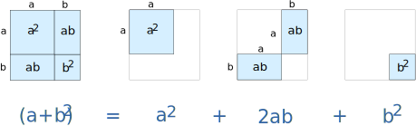
In 3 dimensions, (a+b)3 = a3 + 3a2b + 3ab2 + b3
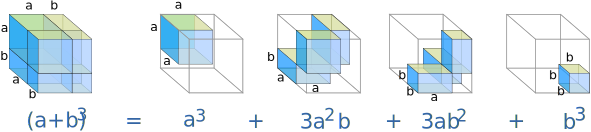
In 4 dimensions, (a+b)4 = a4 + 4a3b + 6a2b2 + 4ab3 + b4
(Sorry, I am not good at drawing in 4 dimensions!)
Advanced Example
And one last, most amazing, example:
Example: A formula for e (Euler's Number)
We can use the Binomial Theorem to calculate e (Euler's number).
e = 2.718281828459045... (the digits go on forever without repeating)
It can be calculated using:
(1 + 1/n)n
(It gets more accurate the higher the value of n)
That formula is a binomial, right? So let's use the Binomial Theorem:
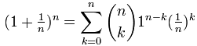
First, we can drop 1n-k as it is always equal to 1:
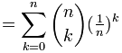
And, quite magically, most of what is left goes to 1 as n goes to infinity:
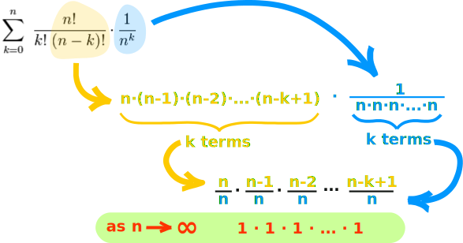
Which just leaves:
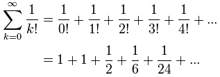
With just those first few terms we get e ≈ 2.7083...
Try calculating more terms for a better approximation! (Try the Sigma Calculator)
Isaac Newton
As a footnote it is worth mentioning that around 1665 Sir Isaac Newton came up with a "general" version of the formula that is not limited to exponents of 0, 1, 2, .... I hope to write about that one day.